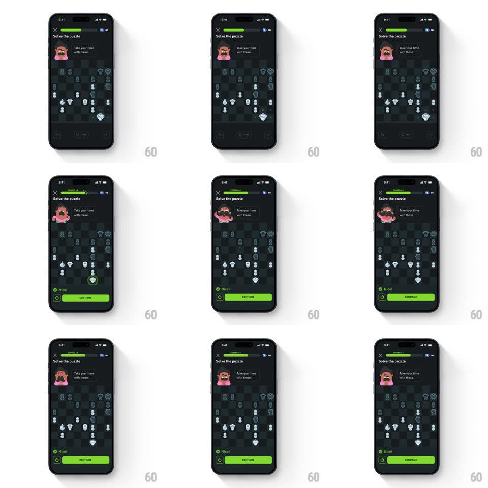

Media
Frame-by-frame

Rebuild this animation 1:1: Duolingo Chess' happy Oscar - solve the puzzle and Oscar does a squash-and-stretch joy bounce as the progress bar fills and the success sheet slides up.

Rebuild this animation 1:1: Duolingo Chess' happy Oscar - solve the puzzle and Oscar does a squash-and-stretch joy bounce as the progress bar fills and the success sheet slides up.
## Integration
Integration: stack-agnostic spec - springs given as stiffness/damping, timed motions as duration + curve; map every value to your framework and animation library of choice.
## Scene
Duolingo Chess puzzle, near-black: "Solve the puzzle" title, close X, green progress bar, Oscar top-left with his bubble ("Take your time with these."), the chess board, and the success sheet ("Nice!" with a green Continue button).
## Motion spec
Pattern: squash-and-stretch mascot bounce on puzzle completion.
- The correct move lands (piece slide, 250ms; destination square rings green, 400ms).
- Oscar reacts: a quick anticipatory squash (scaleY 1 -> 0.8, scaleX -> 1.15, 100ms), then a happy launch (scale back through 1 to scaleY 1.12, spring ~380/11, ~450ms) with a 14px hop and a wide-open smile; his bubble lifts with him.
- The progress bar fills its segment with a green wipe (300ms) timed to the bounce's peak.
- Oscar lands with a second small squash (scaleY 0.92, 120ms) and settles with one wobble (spring decay, ~300ms).
- 250ms after the landing, the success sheet slides up (translateY 100% -> 0, spring ~320/20): green check, "Nice!", and Continue.
## Calibration
- The bounce is full squash-and-stretch - volume shifts between scaleX and scaleY, never a uniform scale.
- One bounce only - no idle looping after the sheet arrives.
## Reduced motion
Oscar fades between neutral and happy poses (200ms); the sheet fades up.
## Don't miss
- The bubble rides with Oscar - it never detaches or lags.
- The sheet waits for the bounce to finish: solve -> bounce -> sheet, in that order.